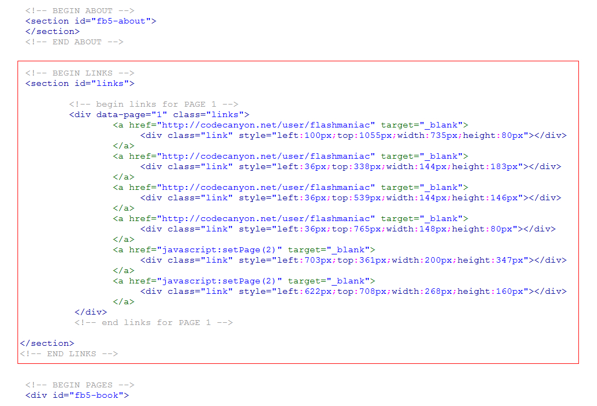

Created: 30/10/2019
By: flashmaniac
WebSite: www.flashmaniac.net
Thank you for purchasing my flipbook. If you have any questions that are beyond the scope of this help file, please feel free to email via my user page contact form here. Thanks so much!
You do not need to install FlipBook. FlipBook works without installation.
The entire structure of the flipbook is in the html file ("full-area.html" or "responsive.html" or "not-responsive.html")
If you are using a lightbox (file "lightbox.html") then the structure is in a folder "lightbox" ( pathway "lightbox/content.html" )
For example, pages 2 and 3:
Important attributes for you
Adding, deleting and editing page you are doing in the div with the id = fb5-book.
See the code below:
Also remember edition of deep linking.See Deep linking See the code below:
Thumbs editing the section id = "FB5-slider". See the code below:
For the left and right page you have to use classes in html file (as pictured below). Pathway to the photo must be the same.
If you have a lot of pages loading may be slow. Then I recommend you use the "Lazy loading". The default is disabled. You can enable it in the html file. See point Configuration.
The basic configuration is possible in the html file ( full-area.html or responsive.html or not-responsive.html )
If you are using a lightbox when the configuration is in the folder "lightbox" ( pathway - "lightbox/config.html" )
See screen below:
For each page, you can set a unique address in browser:
You must do this in the id="fb5-deeplinking":
Included .css files:
Included .js files:
Lightbox ( file 'lightbox.html' )
If you use FlipBook as lightbox (file "lightbox.html) locally on your computer - use the Firefox browser.
Lightbox uses ajax and is blocked by other browsers (but only locally). On the server file "lightbox.html" works in all browsers.
PDF.js ( file 'full-area-pdf.html' )
If you use PDF.js ( more here ) for security reasons, some browsers may block library PDF.js (locally on your computer).
But on the server - it works in all browsers. If you want to use locally - using the Firefox browser or convert your pdf to jpg (use a converter - http://pdf2jpg.net/)
FlipBook uses the library PDF.js. If you want your FlipBook to read the pdf file you need to specify only pathway to a pdf file. See Configuration - variable 'pdf_url'. There, enter your pathawy to a pdf file. Example of reading PDF files - a file "full-area-pdf.html".
NOTE:
For each page you can add text. See the picture below (text - highlighted by a red frame). Check the page structure (if you do not know)
For each page you can add unlimited number of links. Links are in the section id = "links". In the preview for codecanyon links are an example for page 1.
Once again, thank you so much for purchasing this theme. As I said at the beginning, I'd be glad to help you if you have any questions relating to this theme. No guarantees, but I'll do my best to assist. If you have a more general question relating to the themes on ThemeForest, you might consider visiting the forums and asking your question in the "Item Discussion" section.
flashmaniac